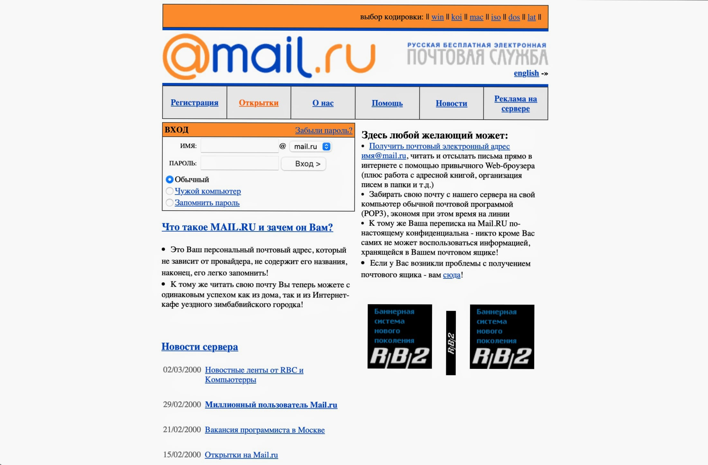
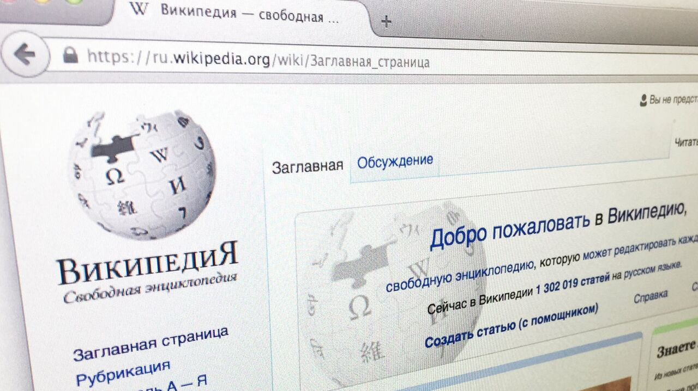

История
Интернет технологии
Интернет-технологии.
Интернет-технологии широко
используются в самых различных
сферах деятельности современного
общества и, конечно, в первую
очередь, - в информационной сфере.
Они позволяют оптимизировать
разнообразные информационные
процессы.
Интернет-технологии позволяют активизировать и эффективно использовать информационные ресурсы общества, которые сегодня являются наиболее важным стратегическим фактором развития. Интернет-технологии позволяют оптимизировать и во многих случаях автоматизировать информационные процессы, которые в последние годы занимают все большее место в жизнедеятельности человеческого общества.

Использование Интернет-технологий является элементом, включенным в более сложные производственные и социальные процессы. Интернет-технологии сегодня играют исключительно важную роль в обеспечении информационного взаимодействия между людьми, а также в системах подготовки и распространения массовой информации.
Информационные технологии играют в настоящее время ключевую роль также и в процессах получения и накопления новых знаний. Принципиально важное для современного этапа развития общества значение развития Интернет-технологий заключается в том, что их использование может оказать существенное влияние на решение основных проблем экономического развития общества. Компоненты Интернет-технологий могут быть рассмотрены с двух точек зрения: физической и логической.
Разработка протокола Transmission Control Protocol/Internet Protocol (TCP/IP).
Под эгидой Агентства по перспективным исследованиям МО США (ARPA) началась разработка и внедрение глобальной военной компьютерной сети, связывающей исследовательские лаборатории на территории США. 29 октября 1969 года – день рождения Сети. В этот день была предпринята самая первая, правда, не вполне удавшаяся, попытка дистанционного подключения к компьютеру. Чарли Клайн (Charley Kline) из Калифорнийского университета в Лос-Анджелесе (University of California at Los Angeles, UCLA) пытается авторизоваться на компьютере Стэнфордского исследовательского института (Stanford Research Institute, SRI). Попытка оканчивается крахом системы в момент ввода буквы G в слове LOGIN. Удаленные друг от друга на расстояние 500 километров, SRI и UCLA стали первыми узлами будущей сети ARPANet.
Появление службы электронной почты.
В октябре 1971 года главный инженер американской компании BBN Technologies Рэй Томлинсон отправил с одного компьютера на другой послание с незамысловатым содержанием "QWERTYUIOP" (набор клавиш верхней строки стандартной клавиатуры). Письмо дошло и, таким образом, открыло новую главу в истории человеческого общения. Примечательно, что Сэмьюэл Морзе, придумавший телеграфную азбуку, придал первому сообщению высший смысл, пробив цитату из Библии. Первым в истории адресом электронной почты был tomlinson@bbn-tenexa. Знак "@" - это разделитель адреса электронной почты, который называется "эт-символ" (at-sign).
Хотя не все англоязычные граждане знают его имя. "At" на английском языке имеет более 10 значений, но вместе с тем практически нигде не используется. На компьютеры "@" перекочевал с печатных машинок, чисто по инерции, так как и тогда он означал неизвестно что. Так и ставили его по привычке, начиная с "Ундервуда" образца 1885 года. Корнями "at" уходит в XV век. Хотя не все англоязычные граждане знают его имя. "At" на английском языке имеет более 10 значений, но вместе с тем практически нигде не используется. На компьютеры "@" перекочевал с печатных машинок, чисто по инерции, так как и тогда он означал неизвестно что. Так и ставили его по привычке, начиная с "Ундервуда" образца 1885 года. Корнями "at" уходит в XV век.
Разработка протокола Transmission Control Protocol/Internet Protocol (TCP/IP).
В 1974 г. Internet Network Working Group, созданная DARPA и руководимая Винтоном Серфом разработала универсальный протокол передачи данных и объединения сетей TCP/IP - сердце Internet. Разработкой концепции протоколов современного Интернета Серф занимался в Стэнфорде вместе с Робертом Каном на протяжении 1973—1974 гг. Первый завершенный проект ТСР был представлен в декабре 1974 году, а с 1975 года начались пробные испытания нового протокола в научно-исследовательских организациях. В 1976 году Серф был принят в Агентство передовых исследовательских проектов на должность программного менеджера. Здесь Винтон занялся проблемами межсетевой пакет- ной передачи данных, параллельно продолжая работать над усовершенствованием ТСР. С появлением открытой сетевой архитектуры ТСР претерпел очередное изменение, превратившись в ТСР/IP, — произошло отделение межсетевого протокола IP от протокола управления передачей ТСР (оказавшееся в общем-то условным). В июле 1977 года прошли первые испытания пакетной коммуникации между сетями Америки, Канады и Швеции. Эксперимент стал первым подтверждением возможности существования Интернета. В современном представлении Интернет появился 1 января 1983 года после перехода его родоначальницы ARPANET на протокол ТСР.
Создание электронной доски объявлений BBS.
16 февраля 1978 года в Чикаго (США, шт. Иллинойс) заработала первая BBS – электронная доска объявлений (Bulletin Board System). Удаленный доступ к этому программно-аппаратному комплексу обеспечивается посредством прямого модемного соединения через BBS телефонную линию и с помощью специальной программы-терминала. Пользователи BBS могли получать имеющуюся в рамках системы информацию (ПО, тексты, файлы), читать новости, обмениваться данными с другими посетителями. Расцвет BBS пришелся на тот период, когда Интернет еще не стал широко доступен. Бурные электронные дискуссии, пошаговые многопользовательские игры, встречи участников «в реале» — в результате возник поразительный социальный феномен. Придуманная Вардом Кристиансеном (Ward Christensen) и Рэнди Сьюсом (Randy Suess) BBS размещалась на ПК с шиной S-100, 64-Кбайт ОЗУ, двумя 8-дюймовыми дисководами и модемом Hayes MicroModem 100, работавшим со скоростью 300 бод. Вард разработал систему команд с использованием ассемблера в среде ОС CP/M для процессора Intel 8080, ставшую затем частью протокола для передачи файлов XModem. Рэнди взял на себя аппаратную часть станции. Первую BBS назвали CBBS — компьютеризованная электронная доска объявлений (Computerized Bulletin Board System). Затем начальная буква в названии исчезла, и все последующие аналогичные системы стали именовать просто BBS.
Создание первых сайтов.
19 сентября 1990 в базе данных InterNIC официально зарегистрирован домен первого уровня .SU. В 1990 родилась World Wide Web. Тим Бернерс-Ли разработал язык HTML и прототип Всемирной паутины, а также редактор Web-страниц и коммуникационные программы. В Европейской лаборатории элементарных частиц института CERN в Женеве, 17 мая 1991 года состоялось первое подключение первого Web-сервера, и всего за год число хостов достигло 1 млн.
1994. Появились первые рекламные баннеры. 23 сентября 1997 года официально открыта поисковая система Яndex. 1 октября 1998 года открылась бесплатная почтовая служба Mail.ru. 20 октября 1998 года начал работать сервер «Кирилл и Мефодий». В качестве основы использовались онлайновые версии мультимедийных энциклопедий.

World Wide Web
Первый рекламный баннер

Yandex

Mail.ru
Сервер «Кирилл и Мефодий»
Современный интернет
Могли бы жить без интернет технологий?
Вероятнее всего да. Однако на сегодня технологии Internet не только приближают человечество к общей доступности информации или информационным ресурсам, но и определяют дальнейшее развитие всего общества. Простое подключение к Интернет, глобально расширили количество пользователей Интернет информации, от любопытствующих фрилансеров, до расширения Интернет ресурсов правительственных, общественных и социальных органов. Включая «компьютеризацию» и «интернетизацию» офисов, включает в обработку и передачу информации основную часть населения стран, беспокоящихся о своем развитии. И здесь не обойтись без новых Интернет технологий, автоматизирующих информационные ресурсы общества, делающих их интуитивно доступными и понятными. Беспроводная связь WiFi и WiMAX, также, увеличивают число пользователей Интернет.
Теперь уже не нужно быть “привязанным” к технологии проводной связи для выхода в net. Интернет технологии вывели социальное общение людей на новый уровень. Правда, не знаю хорошо это или плохо, но уровень и способы общения меняются с внедрением новых Интернет технологий. Огромно влияние технологий интернет и на экономику стран. Говоря про нашу страну, за последние годы, технологии Интернет торговли, в буквальном смысле ломают традиционную торговлю, поворачивая ее в сторону технологий сети. Нельзя не упомянуть, о влиянии Интернет–технологий на процессы обучения и переобучения, причем для всех слоев населения от школьников, до среднего класса. Внедрение Интернет технологий в школах, институтах, onlineобучение на дому, семинары, вебинары, веб – конференции это уже стало общедоступно и становится обязательным в любом обучающем процессе.
Интернет технологии сегодня
Бурное развитие интернет технологий и возможность получать информацию где угодно изменили жизнь всего общества и основные аспекты ведения бизнеса в частности. Развитие всемирной паутины преобразило жизнь всего человечества. С каждым днем появляются все новые и новые возможности как для каждого человека в частности, так и для всех сфер бизнеса. Сегодня уже никого не удивишь тем, что за билетами в кино, театр или на концерт не нужно стоять в очереди в кассу, а можно купить их по интернету. Интернет-покупки стали обычными для большинства из нас.
Современные интернет технологии
Веб-сервер
Компьютер, который отвечает за хранение файлов веб-сайта и обмен ими с другими компьютерами.

Сайт
Интернет-ресурс, состоящий из одной, нескольких или множества виртуальных страниц.
Технология и служба по пересылке и получению электронных сообщений
Форум
Класс веб-приложений для организации интернет-общения.
Блог
Веб-сайт, основное содержимое которого — регулярно добавляемые пользователем записи.
Чат
Средство обмена различной информацией по компьютерной сети в режиме реального времени.

Википедия
Общедоступная многоязычная универсальная интернет-энциклопедия со свободным доступом к созданию и редактированию контента.
Веб-технологии
Веб языки програмирования
Языки, которые в основном предназначены для работы с веб-технологиями.
Веб-страницы DOM: объектная модель документа (DOM)
Специальная древовидная структура, которая позволяет управлять HTML-разметкой из JavaScript-кода.

Язык разметки XML
Язык разметки, который предоставляет правила для определения любых данных.
Браузеры
Программа для просмотра веб-страниц.
Поисковые системы
Компьютерная система, созданная специально для поиска необходимой информации в интернете.
SEO (поисковая оптимизация)
Совокупность процессов, позволяющих улучшить сайт для его ранжирования в поисковых системах.